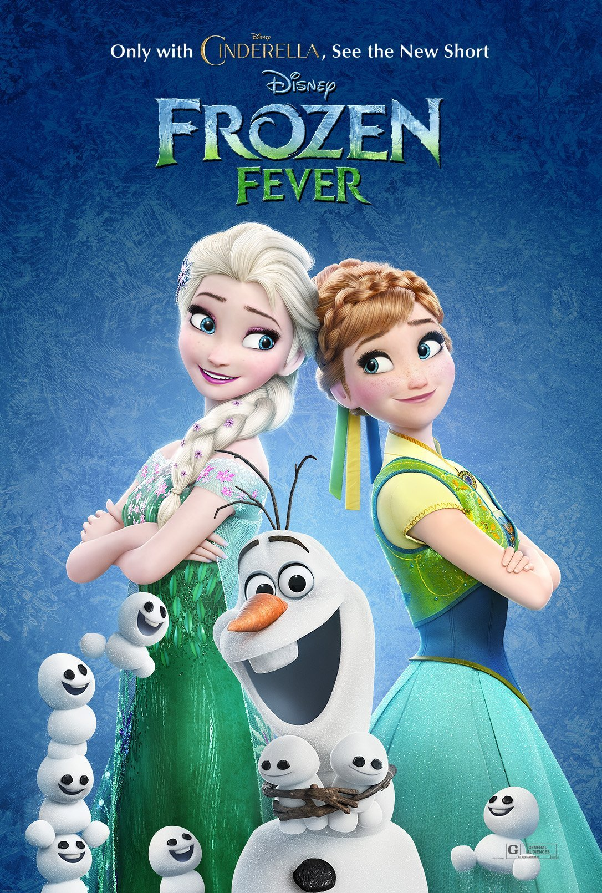
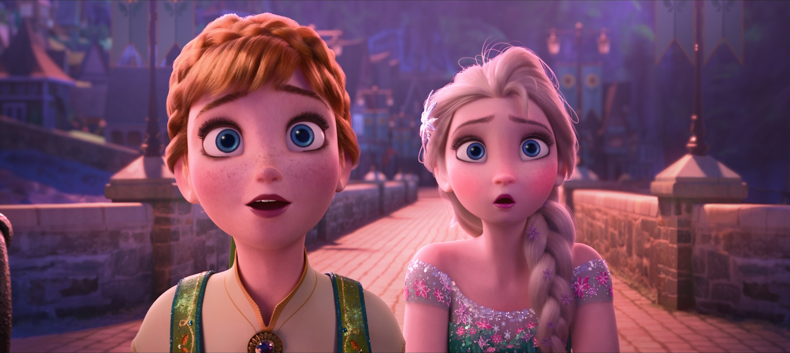
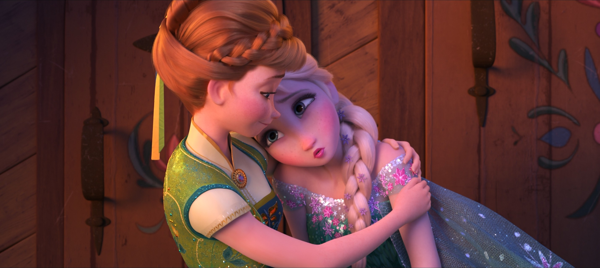

时间线定位：
电影 1 之后数月，安娜加冕后的首个生日。艾莎已成为阿伦黛尔女王，姐妹关系修复，王国一派春日景象。剧情开端：
艾莎为安娜的生日精心筹备一场盛大派对，与雪宝、克里斯托夫、斯文一起布置城堡。艾莎反复强调“今天一定要完美”，却在过程中开始出现感冒症状——打喷嚏、流鼻涕，但她强撑着不肯休息。
核心冲突：
艾莎每打一个喷嚏，魔法就会失控喷出一群迷你小雪人（Snowgies）。这些小雪人活泼好动、成群结队，在派对现场到处捣乱——撞翻蛋糕、扯坏装饰、追着雪宝跑。艾莎一边硬撑着继续筹备派对，一边喷嚏不断，小雪人越生越多，派对逐渐失控。高潮与转折：
安娜终于发现艾莎一直在生病，却为了给自己办生日派对而硬撑。安娜又心疼又无奈，当即叫停派对，把艾莎按回床上休息。姐妹角色互换——此前一直是艾莎照顾安娜，这次换安娜照顾感冒的艾莎。
结局：
艾莎在安娜的照顾下休息，安娜说“这就是我收到的最好的生日礼物”。那群小雪人（Snowgies）最后被送到北山的冰宫殿，和 Marshmallow（棉花糖）一起生活——冰宫殿从此多了一群热闹的小居民。雪宝在一旁感叹“温暖的拥抱”。歌曲：全片唯一歌曲 “Making Today a Perfect Day”
（让今天成为完美的一天），由艾莎主唱，安娜、雪宝、克里斯托夫合唱，定调全片的欢庆与温馨。